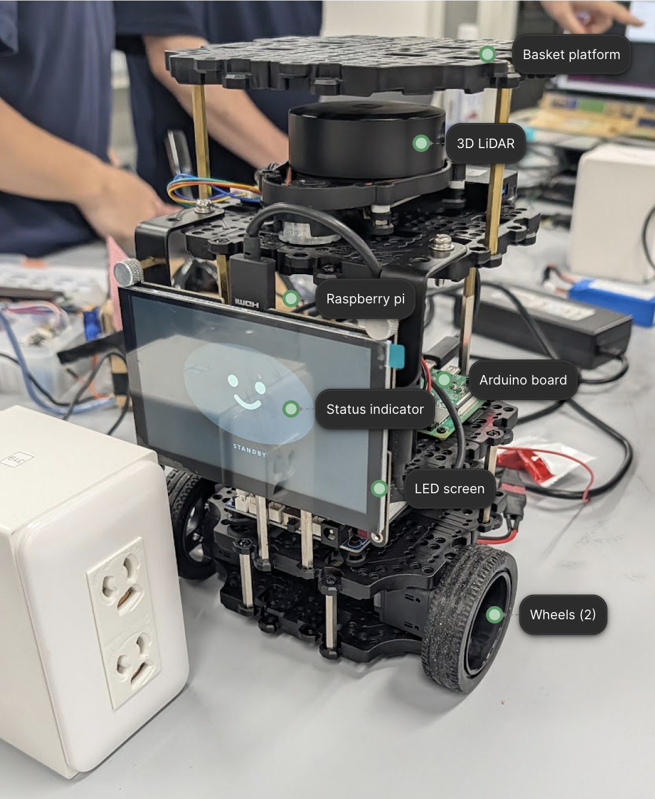

For residents who can't easily walk a note down the hall, and staff teams with no bandwidth to be a note delivery service, TurtleBot3's LiDAR-based navigation stack handles that mobility problem directly.

Native sensors handle navigation with additional compartment sensing and arrival signaling to support the delivery interaction.
| Native sensors | Custom sensors |
|---|---|
|
|
The miniature 3-room environment's doorways were narrow relative to the Burger's footprint, causing the local planner to stall or clip corners.
Tuned costmap inflation radius and footprint padding; slowed approach speed near doorway waypoints.
Odometry drift accumulated over repeated trips, causing misalignment when re-docking at the home base.
Added a fixed visual/IR marker at the dock for final-approach correction instead of relying on odometry alone.
Low-mounted LiDAR sometimes misread a passing person as static map clutter, or missed low obstacles.
Adjusted costmap obstacle layers; added a proximity-based "pause if close" safety behavior independent of path planning.
Facility liability for autonomous movement near residents. In Japan, procurement may route through the public Kaigo Hoken system rather than discretionary budget in private facilities.
Staff workload cost of loading/troubleshooting; recipient-not-present edge cases; unauthorized cargo access; non-reciprocity between residents.